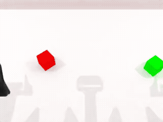
正常成功
成功示范 → 故意执行错误 → 从当前状态恢复。这里展示安装版本的任务清单与实测证据；一个仿真器能启动，不代表它的全部任务都有成功策略。任务类别覆盖也不代表所有种子、场景和扰动都成功。
绿色表示提供的实验报告中至少存在一个正例；“未证实”表示缺少正面证据，不等于任务不可完成。合格纠错要求源轨迹成功、扰动造成偏差、错误对照失败、恢复成功，并通过采集协议的配对检查。
加载真实报告…
| 环境 / 任务 | 源轨迹成功 | 有效扰动 | 恢复成功 | 合格纠错对 | 证据 |
|---|
RoboCasa 数量取自当前安装版本的官方数据集任务注册表；当前仅 NavigateKitchen 有任务完成与纠错证据。AI2-THOR 是自定义 PointNav 场景，不是官方 ObjectNav 全任务覆盖。MimicGen 是扩增工具，其 Lift 结果在实验台展示，不混入任务覆盖总数。
下载覆盖报告 JSON · 环境版本、复现命令与边界同一个 seed 101。源轨迹 3,935 物理步后成功；错误对照 4,175 步后失败；恢复轨迹 7,748 步后成功。三条轨迹独立回放状态误差均为 0。固定四次尝试得到 3 组有效纠错。原生回放证据。

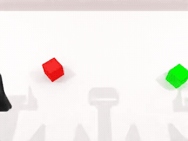
每个任务展示同一种子下的成功源轨迹、错误对照失败、重新规划后成功。21 条轨迹全部独立执行原生动作，状态误差为 0。查看完整回放证据。
原生采集时直接录制；这些源示范不计为纠错对。首轮共 50 次尝试，其余失败和错误完整保留。
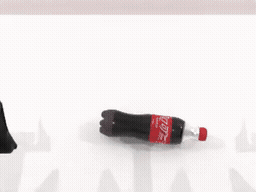
seed 900 · 82 个原生录制帧
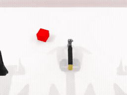
seed 900 · 65 个原生录制帧
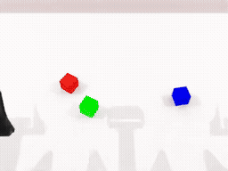
seed 900 · 254 个原生录制帧
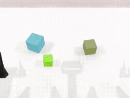
seed 900 · 264 个原生录制帧
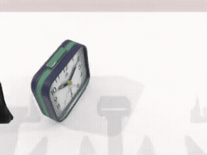
seed 900 · 52 个原生录制帧
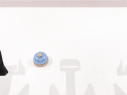
seed 900 · 44 个原生录制帧
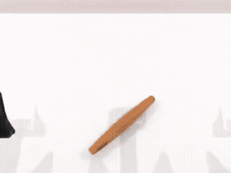
seed 900 · 52 个原生录制帧
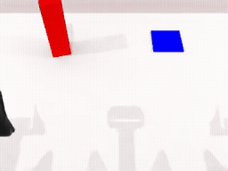
seed 900 · 169 个原生录制帧
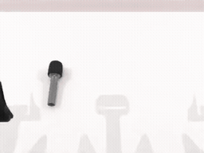
seed 900 · 124 个原生录制帧
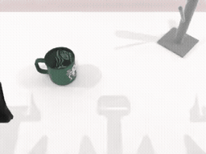
seed 900 · 196 个原生录制帧
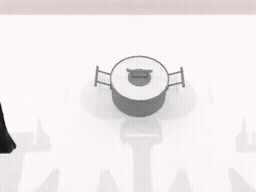
seed 900 · 61 个原生录制帧
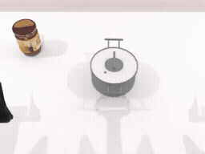
seed 900 · 83 个原生录制帧
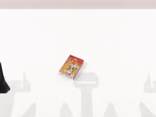
seed 900 · 63 个原生录制帧
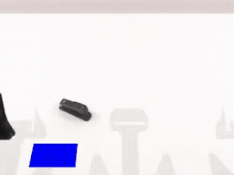
seed 900 · 80 个原生录制帧
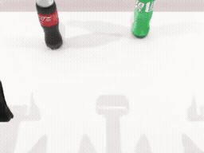
seed 900 · 70 个原生录制帧
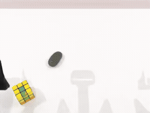
seed 900 · 81 个原生录制帧
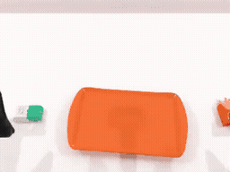
seed 900 · 132 个原生录制帧
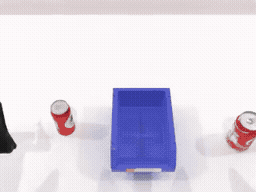
seed 900 · 159 个原生录制帧
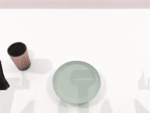
seed 900 · 89 个原生录制帧
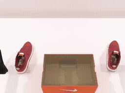
seed 900 · 128 个原生录制帧
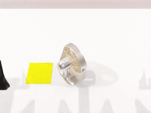
seed 900 · 87 个原生录制帧
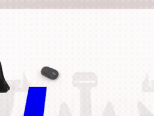
seed 900 · 86 个原生录制帧
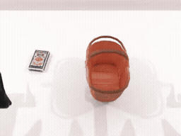
seed 900 · 139 个原生录制帧
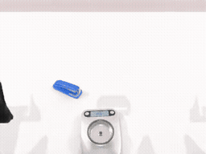
seed 900 · 80 个原生录制帧
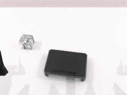
seed 900 · 77 个原生录制帧
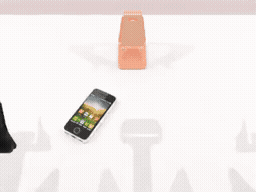
seed 900 · 71 个原生录制帧
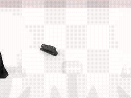
seed 900 · 65 个原生录制帧
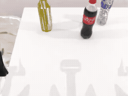
seed 900 · 364 个原生录制帧
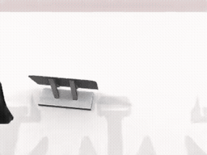
seed 900 · 85 个原生录制帧
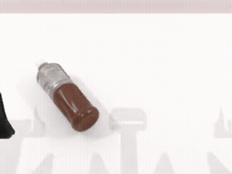
seed 900 · 136 个原生录制帧
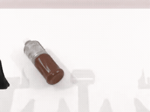
seed 900 · 154 个原生录制帧
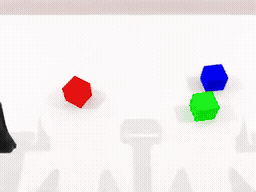
seed 900 · 254 个原生录制帧
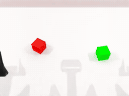
seed 900 · 173 个原生录制帧
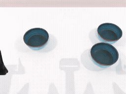
seed 900 · 270 个原生录制帧
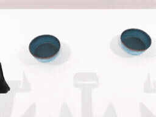
seed 900 · 183 个原生录制帧
seed 900 · 77 个原生录制帧
seed 900 · 53 个原生录制帧
每类一个合格纠错样本。50 条视频再次独立执行保存的动作，记录状态误差为 0；与此前 150 条源轨迹／错误对照／恢复轨迹回放相对应。动图按查看帧率播放，不用于比较物理速度。